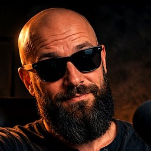

Jediné české místo, kde se o UFO mluví narovinu — s vtipem, s důkazy a se soubojem dvou týpků: Franta griluje fakty, Pepan věří všemu z internetu.

Franta„Tak se na to podíváme!"
Pepan„Já to věděl! Jsou to mimozemšťani!"
Spouštíme. Chceš být u toho?
Chystáme pravidelné články, rozbory odtajněných spisů, Frantovy komentáře a novinky ze světa UAP — vše česky a bez bullshitu. Nech nám e-mail a budeš první, kdo to dostane.
Odesláním souhlasíš se zpracováním e-mailu za účelem oznámení o spuštění (GDPR). E-mail nikomu nepředáváme a kdykoli se můžeš odhlásit.